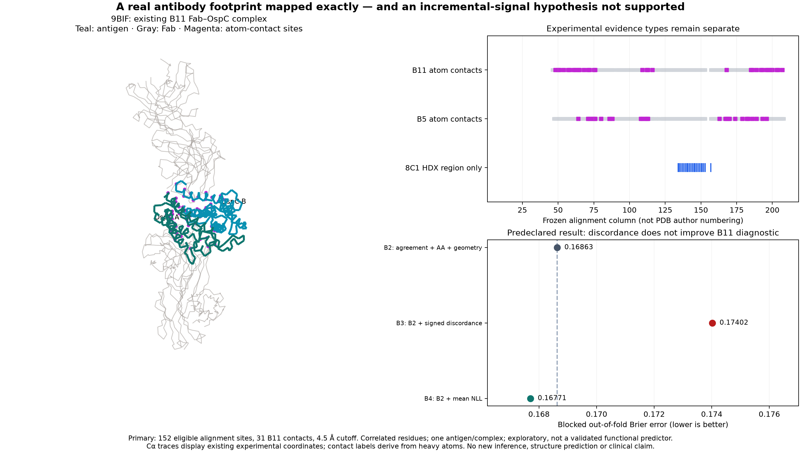

Local preview. GitHub rendering has not been verified.
LYMESCOPE
Making the invisible biology of Lyme disease explorable.
More than 80,000 Lyme cases are reported to CDC each year. A separate claims-based estimate suggests 476,000 people are diagnosed and treated; these are different measures, with different limitations. CDC · Evidence C01
Question: Within 30 selected natural OspC sequences, does empirical sequence agreement track a protein language model’s ability to predict each original residue? Result: A completed personal-GB10 experiment scored 6,305 singleton masks and found weak descriptive agreement–predictability correlation across 202 fully covered columns (Spearman rho 0.134696). Limit: This selected-panel result does not establish immune protection, antibody accessibility, a vaccine target or clinical utility. C02 · C04 · C07

Original saved scientific output. Lower NLL means more predictable under the pinned checkpoint. Incomplete columns remain visible and are excluded from full-coverage ranks. Full-size SVG · Exact data.
Open the evidence workbench
Guided workbench: docs/index.html · Original demo · Frozen v0.1.0 viewer
Open the HTML after downloading/cloning this feature branch. The workbench is zero-build, with embedded data and local assets: no model, server, package installation or network is needed. GitHub’s file view shows source; GitHub Pages hosting is prepared, not claimed live. Local instructions · Pages preparation
git clone --branch feature/ospc-masked-scoring-v0.2.0 https://github.com/francolinx/LymeScope.git
# Then open LymeScope/docs/index.html in a browser.
| Guided story |
Inspect |
Evidence boundary |
| 1 · The coverage trap |
Column 154: 100% modal agreement, 1/30 observations |
One observation cannot support broad conservation |
| 2 · The model disagreement |
Column 177: G:30, NLL 4.01135; column 129: mixed residues, NLL 1.54783 |
NLL measures conditional predictability, not conservation or immunogenicity |
| 3 · The homodimer |
Experimental 1GGQ A/B; verified contacts and separate calculated SASA |
Static geometry is not physiological antibody accessibility |
| 4 · What experiments add |
Verified B11 footprint and a negative predeclared diagnostic; supporting B5 context |
No incremental predictive value demonstrated; 8C1 remains literature-only |
C03 · C08 · C09–C12 · Independent evidence C15
From experimental structure to local scientific AI
X-ray/NMR → homology, threading and ab initio methods → CASP blind assessment → AlphaFold → protein language models → local, inspectable evidence analysis. These approaches answer different questions; there is no universal historical accuracy percentage. Primary-source timeline · Accessible original timeline
LymeScope uses ESM-2 for residue scoring and existing experimental PDB structures for coordinates. ESMFold and AlphaFold are historical context, not the source of these OspC coordinates. C06 · C11
Three original scientific animations — with static alternatives

The actual homodimer. Teal/blue show the deposited partners; amber is the legacy 8 Å Cα proximity proxy, distinct from the current 4.5 Å heavy-atom contact field. Rotation is camera motion, not folding or dynamics. Static.

An explicit sequence-to-structure map. Column 68 → Q07337 position 67 → 1GGQ A Ser67. Coverage and agreement travel with the correspondence. Static.

The coverage trap. The percentage is correctly calculated from one observation; that is insufficient support for broad conservation in this panel. Static.
Original asset hashes, frame counts and sources: manifest, C16. The interactive workbench starts with static images and offers deliberate play/stop controls. Browser playback is a separate validation step.
What was measured
| Evidence |
Recorded result |
Scope |
| Frozen natural panel |
30 sequences; 218 alignment columns |
Selected, related sequences; fixed alignment |
| Analysis sets |
F 202, M 162, MF 159 |
Fully covered, observed mapped, intersection; M minus F = 75/86/119 |
| Personal-Spark ESM-2 |
6,305 masks / 805 scoring calls at batch 8 |
Original residues; three warm-up calls / 24 examples separate |
| Warm GPU scoring |
9.909294 s on personal GB10 |
Model load + transfer 0.313129 s |
| Process wall |
10.510127 s after imports |
Not complete launch-to-result workflow time |
| Sensitivity |
239 overlapping subsets |
30 leave-one-out, 200 half-panels, nine metadata-group omissions; zero additional model calls |
| 1GGQ dimer geometry |
118 contact pairs; 51 residues/partner at ≤4.5 Å |
OspC–OspC contacts, not antibody contacts |
| Calculated SASA loss |
4,081.16 Ų total; 2,040.58 Ų mean partner interface |
1.40 Å probe; 1,920 points/atom; static incomplete construct |
| Matched event scientific benchmark |
NOT RUN |
No measured one-node/two-node speedup |
C02 · C04–C05 · C07 · C09–C10 · Original SASA figure
Unknown is a data state. Unobserved/unmapped contact and SASA values stay null, distinct from observed false and calculated zero. The current aggregate is full_panel_comparison_v2. C12
CIQ / NVIDIA / VAST event architecture
flowchart LR
A["Frozen panel + explicit mapping"] --> B["Personal NVIDIA GB10: completed ESM-2"]
B --> C["Pinned scientific evidence in Git"]
C --> D["Offline guided workbench"]
C -. "Authorized staging pending" .-> E["CIQ Fuzzball / Team 15"]
E -. "Scientific trial pending" .-> F["Spark30: 6,305 masks"]
E -. "Concurrent trial pending" .-> G["Spark29 + Spark30: 3,156 / 3,149"]
E --- H["Team 15 shared NFS storage"]
Saved event receipts demonstrate a real CUDA calculation on Spark30 and identical shared-storage bytes read on Spark29 and Spark30. They establish infrastructure, not scientific scaling. VAST backend identity remains UNVERIFIED. The saved provisioner is NFS; current CLI reads timed out, and NFS alone does not identify its storage vendor. The scientific shared-storage plan reuses the existing 1 GiB volume, with exact object-cache ingress, one shared model copy and separate output shards—all PLANNED. VAST evidence and blockers · Receipts / C13
The morning trial reuses the exact batch-8 scorer and existing six-file model cache. Independent GPU task shards are not NCCL/RDMA or distributed-model capacity. Physical-node attribution, runtime/pilot checks, exact task coverage, fixed numerical tolerance and complete coordinator makespan are acceptance gates. Morning runbook · Exact venue contract · C14
Challenge, reproduce, inspect
- Start here: claim index / machine-readable JSON, methods and limits, raw 6,305 scores.
- Exact source: personal-Spark commit
aafe818a20ea025370cf4b65145a9684e80aaaef; frozen baseline 8058846c05d4dccd60117dd29ef784af43570418. Raw-score SHA256: b27d926285a8dc338abceba953229089be4f35fcba7c166c1a922be146a6317f.
- Model:
facebook/esm2_t6_8M_UR50D, revision c731040fcd8d73dceaa04b0a8e6329b345b0f5df; eval/inference, float32, eager attention, full-vocabulary log-softmax. Full natural sequences, with exact accession/position/sequence-hash provenance. C06.
- Validation: published 16-test Spark receipt, laptop integration checks, historical frontier sprint checks, current optional science import: 59 passing Python tests and both offline UI copies. Offline fixtures are distinct from actual inference; browser rendering is not inferred from tests.
- Attribution: primary sources and terms. No project license is invented; public visibility does not grant redistribution rights to third-party material.
A hypothesis tested — and not supported
Does agreement–predictability discordance add information about experimentally observed antibody contacts, beyond agreement, reference amino-acid identity and unbound structural geometry? The optional personal-Spark sprint tested this predeclared question using the existing scores and exact experimental-complex mappings. Adding signed discordance did not improve the primary B11 diagnostic. Evidence C18

| Primary B11 comparison · 152 eligible sites |
Blocked Brier (lower is better) |
AUROC |
| Agreement + amino-acid identity + geometry |
0.168634 |
0.620634 |
| Same baseline + signed discordance |
0.174022 |
0.616369 |
Brier error worsened by +0.005388. These are correlated sites in one selected antigen/reference, evaluated with eight held-region blocks and five-column guards, not external functional validation. The figure also retains a small exploratory mean-NLL-added difference; it does not establish a biological advance or overturn the primary negative result. No new inference occurred. Exact result · Methods and limitations
Story 4 exposes 31 eligible B11 contacts / 152 sites in 9BIF and supporting 25 / 152 B5 contacts in 7UIJ's own eligible set. Whole-construct observed counts are 32 and 27 respectively. The 8C1 HDX region is literature-derived, with null atomic-contact labels. Antibody contacts, homodimer contacts and calculated SASA stay separate; missing coordinates remain unknown. These are pre-existing experimental structures, not AI-generated folds, and no new antibody target or protection claim is made. C15 · Original SVG
Pinned frontier source: 82fb8b53018ba4012ccebf02a29efa87b892f6ed. The next research step would require separately justified data or an external validation design; this negative diagnostic is retained in full. The v0.2.1 masked-scoring result and venue contract are unchanged.
Submission: one-page summary · five-minute demo · checklist. November 15: research cutoff 10:30 AM Central, submission noon, live demo 1:00 PM. The completed personal-Spark result and offline fallback do not depend on a venue GPU run.
Project lead statement remains draft awaiting personal approval; organizer eligibility and submission-route confirmation are tracked in the checklist. Main and hosting settings require separate approval.